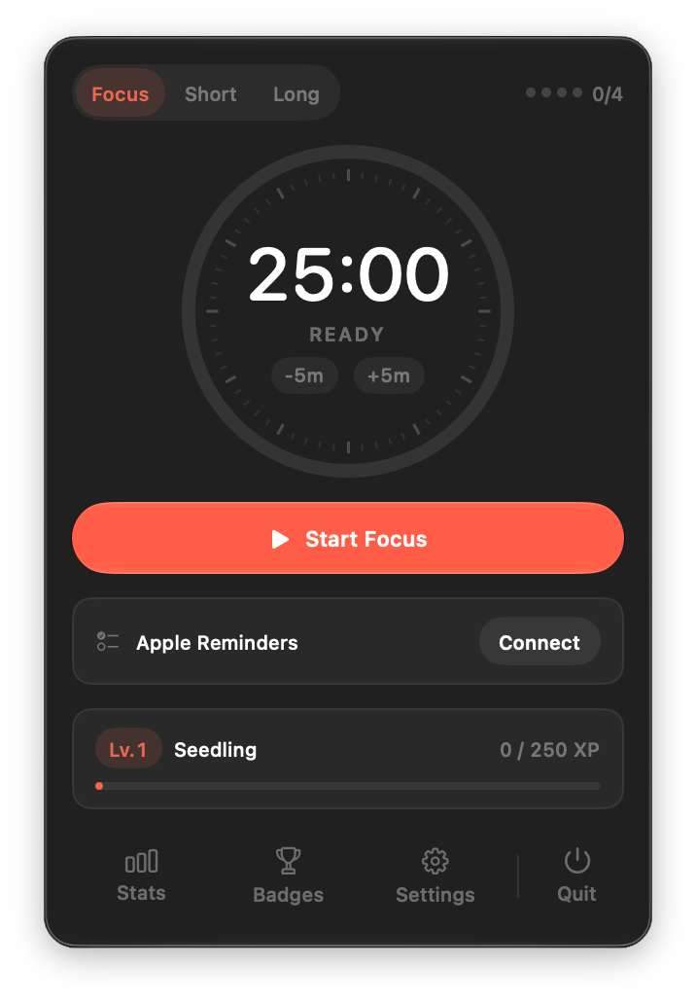
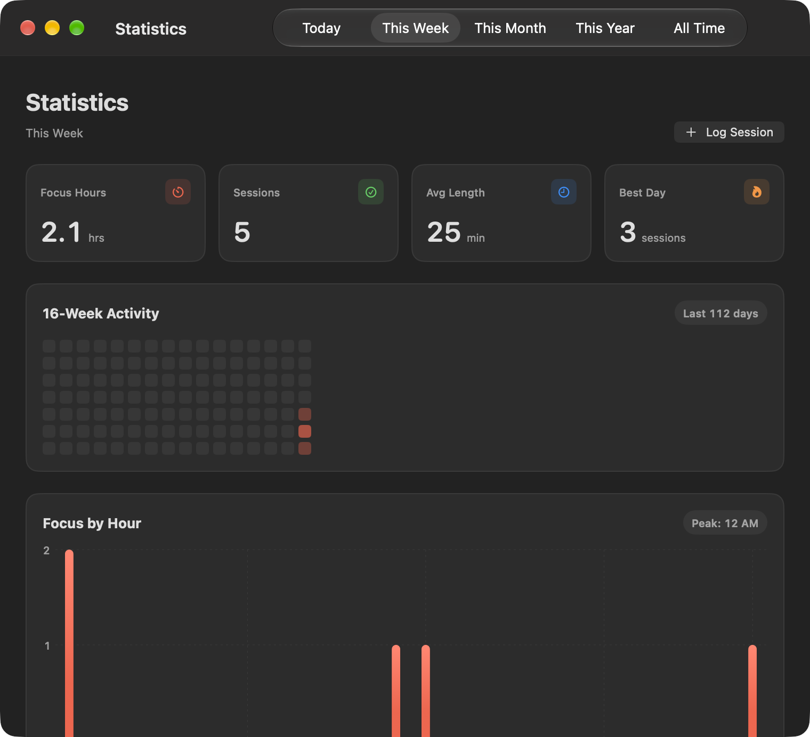
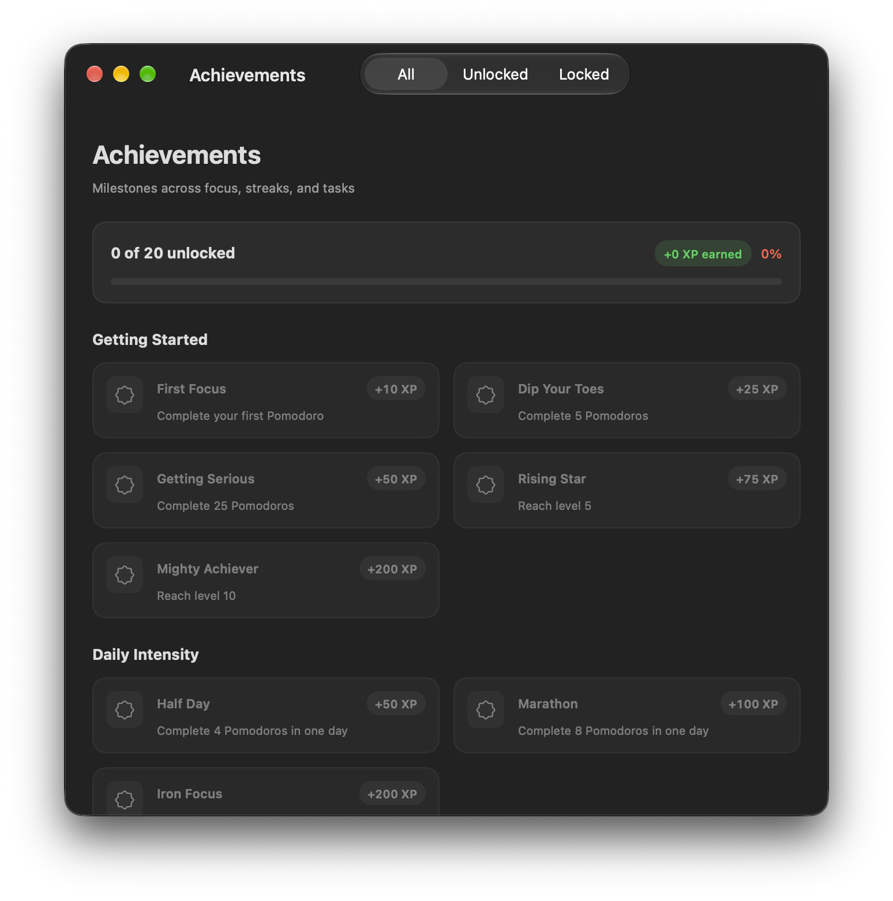

Swiss Chronograph Dial
60 radial perimeter ticks, monospaced tabular numerals that never jitter, and quick -5m / +5m adjustments before you start.
FocusBar is a quiet, native Pomodoro timer built with SwiftUI, SwiftData, and Swift Charts. Stay on track with precision dial timing, Apple Reminders linking, and local-only analytics.

Designed to sit quietly in your menu bar with semantic macOS materials, crisp tabular numerals, and zero distractions.
60 radial perimeter ticks, monospaced tabular numerals that never jitter, and quick -5m / +5m adjustments before you start.
Date-anchored timer state tracks elapsed time accurately across lid close, system sleep, and lock screen transitions.
Link any focus block to an active Apple Reminders task via EventKit and automatically log focused minutes per task.
Inspect focus hours, completed sessions, average length, best day, and hourly distribution across Today, Week, and Month views.
Advance across 30 levels from Seedling upward, unlock 20 milestone badges, and protect daily streaks with weekly freezes.
Sandboxed macOS app using SwiftData on-device storage. Zero accounts, zero telemetry, and full JSON export whenever you want.
Switch between time ranges and achievement filters to preview FocusBar's dedicated statistics and badges windows.


Available as a universal Apple Silicon + Intel cask via Homebrew or as a standalone zipped app bundle.
Recommended for automatic updates and clean management from Terminal.
Download FocusBar.app.zip from GitHub Releases, extract it, and drag FocusBar.app to /Applications.
arm64 + x86_64)
License: MIT Open Source